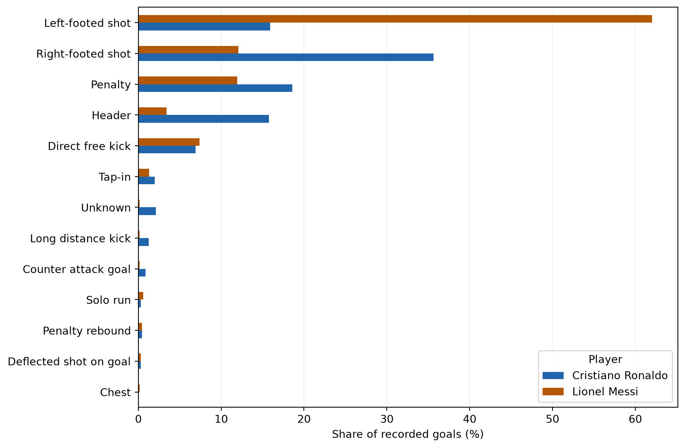

How do Ronaldo and Messi compare in the number and types of club goals recorded in this dataset? Each row represents one goal, not one match. The file is a historical snapshot, so these results are not current career totals.
Load and inspect the data
The relative path below reads the shared CSV from this post’s folder. The interpreter path confirms which Python environment executes the post.
I count rows for each player and check the earliest and latest dates. Different coverage periods mean the totals should not be interpreted as a fair comparison of scoring rates.
Ronaldo has 710 recorded goals and Messi has 703. Ronaldo’s records begin in October 2002, while Messi’s begin in May 2005; both series end in March 2023. A seven-goal difference alone does not establish who was more effective because this file does not provide all appearances or minutes played.
Compare scoring types
Missing goal types remain in an explicit Unknown category. Percentages use every recorded goal for each player as the denominator, including unknown types.
ordered_types = type_counts.sum(axis=1).sort_values().indexax = type_percent.loc[ordered_types].plot.barh( color=["#2166ac", "#b35806"], figsize=(9, 6))ax.set_xlabel("Share of recorded goals (%)")ax.set_ylabel("")ax.legend(title="Player", loc="lower right")ax.grid(axis="x", alpha=0.2)ax.set_axisbelow(True)plt.tight_layout()plt.show()

Figure 1: Share of recorded club goals by dataset scoring category. Unknown includes missing types; each player’s categories sum to 100%.
What I found
Messi’s largest category is left-footed shots (436 goals), while Ronaldo’s is right-footed shots (253). Ronaldo also has more recorded headers (112 versus 24). These differences describe the scoring profiles in this file; they do not measure shooting accuracy because unsuccessful attempts are absent.
The categories mix body parts with situations such as penalties and free kicks. A goal labelled Penalty is not also counted under the foot used, so these categories cannot establish the total number of goals scored with each foot. There are also 15 unknown types for Ronaldo and one for Messi.